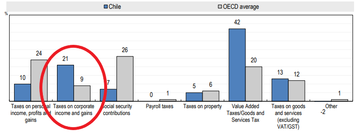

Chile Difiere
Some differences between the Chilean model and the rest of the OECD
Traducción al Español
Traducción al Español
"Relative to the OECD average, the tax structure in Chile is characterised by substantially lower revenues from taxes on personal income."
OECD Revenue Statistics 2019

"Redistribution is measured by the
difference between the Gini coefficient before personal income taxes and transfers (market incomes) and the Gini coefficient after
taxes and transfers (disposable incomes) in per cent of the Gini coefficient before taxes and transfers."
Causa, O. and M. Hermansen (2017), "Income redistribution through taxes and transfers across OECD countries", OECD Economics Department Working Papers, No. 1453, OECD Publishing, Paris, https://doi.org/10.1787/bc7569c6-en.
Unlike other OECD countries, Chile's personal income tax does not reduce inequality.

"Relative to the OECD average, the tax structure in Chile is characterised by substantially higher revenues from value-added taxes (VAT)."
OECD Revenue Statistics 2019
El IVA perjudica a los pobres
VATis a regressive tax.This means the lower your salary is, the more % is taken by VAT.

"The tax structure in Chile is characterised by substantially higher revenues from taxes on corporate income & gains."